Harness Engineering 是什么？AI Agent 越用越聪明的秘密
大家好，我是小林。
不知道你最近是不是和我一样有这种感觉：AI 圈造新词的速度是真的快。
Prompt Engineering 这个词大家还没整明白呢，Context Engineering 又火了一年，资料还在到处转。
最近工程讨论里又出现了一个说法，叫「Harness Engineering」，可以译为“运行护栏/驾驭工程”。它目前更适合作为一组实践的概括，而不是边界已经统一的标准术语。
三天一概念，五天一炸裂，一周一个新名词。
甚至现在每次 AI 圈新诞生一个很火的概念，面试就大概率会被问到，就比如有林友跟我反馈面试就被问到了「Harness 工程」
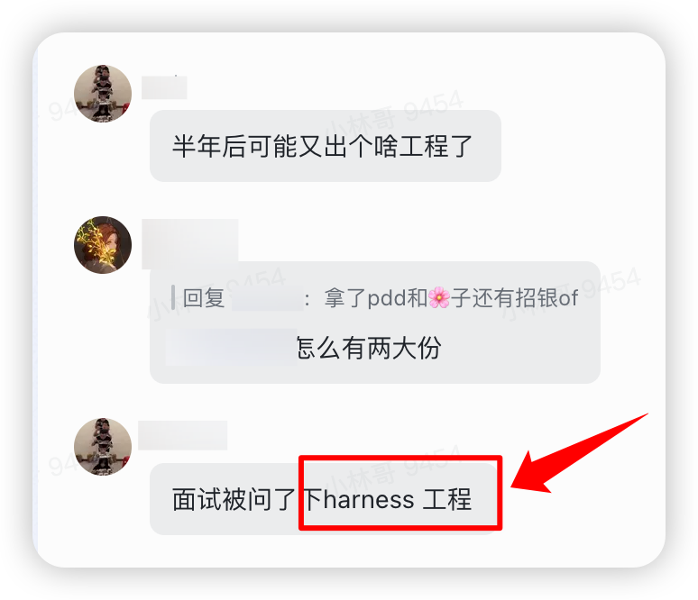
img
你是不是已经麻了？
但麻归麻，我还是去把这个新词的来龙去脉认认真真扒了一遍。
从工程角度看，它强调的是模型之外的运行环境、工具、状态、评估和恢复机制；与 Prompt/Context Engineering 有重叠，不应被当成完全独立、已经定型的学科。
所以今天这篇文章，我想把这三个词一次性给你讲透，主要回答三个问题：
- Harness Engineering 到底是个啥？
- 它跟 Prompt Engineering、Context Engineering 是什么关系？
- OpenAI 和 Anthropic 实现 Harness 遇到了什么难点？
文章会有点长，但我尽量讲得通俗一点，你泡杯茶慢慢看。
这个新词到底从哪儿冒出来的？
在开讲之前，我想先带你去「追个源」。
因为我发现很多人在跟风聊 Harness Engineering 的时候，压根没搞清楚这个词最早是谁提出来的。等你知道了它是谁先喊出来的，你就会明白为啥它这次真的能火，而不是又一个换皮概念。
Mitchell Hashimoto 的《My AI Adoption Journey》是近期讨论这一说法的一个重要来源，但“最早提出者”和确切日期不宜当作术语定义。更稳妥的理解是：社区用 Harness 来指围绕 Agent 构建的运行环境与反馈闭环。
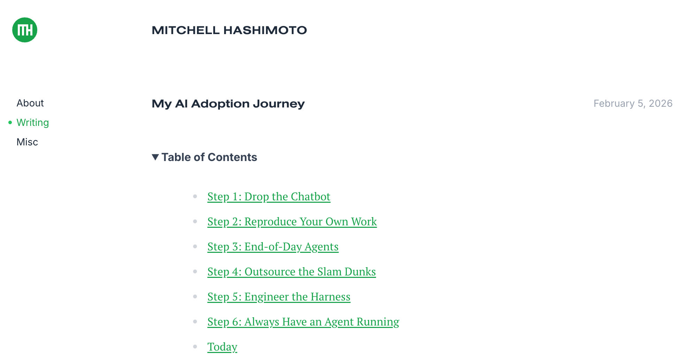
img
标题叫《My AI Adoption Journey》，中文大概是「我接纳 AI 的历程」。讲的就是他作为一个老派工程师，是怎么一步一步从「不信 AI」到「每天让 Agent 替我干活」的心路历程。
他把整个过程拆成了 6 个 Step，前面几步都挺反直觉的，我挑几个有意思的给你讲讲。
第一步，直接扔掉对话框。他说一上来别用 ChatGPT 那种聊天界面，要用就用能自主执行任务的 Agent。为啥？因为聊天界面会给你一种「我在和 AI 讨论」的幻觉，但实际上你啥也没干，Agent 才是真正让 AI 动起来的形态。只有把 Agent 放开让它自己执行，你才能真正感知到它的能力边界在哪儿。
第二步更狠，他强迫自己用 Agent 去重做一部分自己早就已经手写过的代码。听起来是不是有点傻？明明自己两下就能写完的活，非要等 Agent 慢慢磨。他原话说这个过程「painful」，折磨人。但目的很明确：只有你亲自用 AI 去重做你已经熟得不能再熟的任务，你才能精准校准「它到底哪里行、哪里不行」。
然后到了第五步，他给自己这套做法起了个名字，就叫 Engineer the Harness，打磨这套马具。
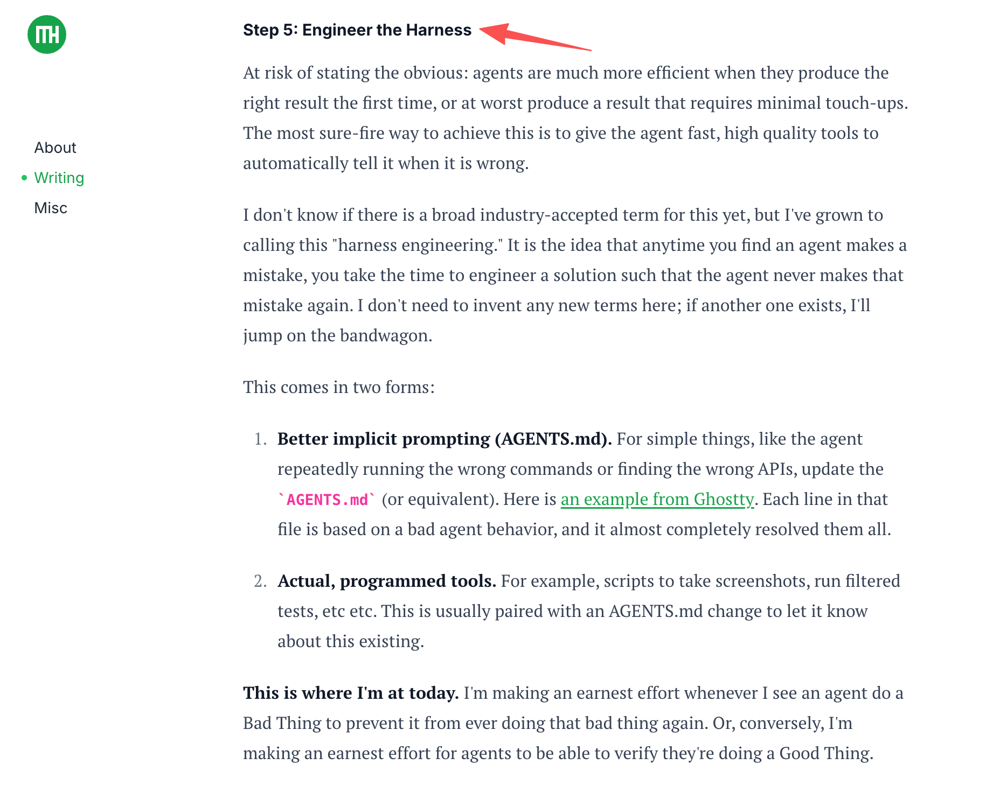
img
文中有一句很有启发性的经验总结，可以概括为：
每次发现 Agent 犯错，就尝试把修复沉淀到环境、规则、测试或工具里，降低同类错误再次发生的概率。
你品品这个思路。绝大多数人遇到 Agent 犯错是怎么办的？骂两句，手动改掉，祈祷下次它别再犯。
但 Mitchell 不是这么干的，他每次 Agent 犯错，都会停下来问自己：我能不能把这个错误永久性地修到环境里，让它下次在结构上就不可能再犯？
可能是给 AGENTS.md 加一条规则，可能是加一个 linter，可能是补一个自动化测试，也可能是搞一个 Git Hook。反正关键是：这个修补必须沉淀到环境里，而不是留在人脑子里。
这套做法可能形成“反馈复利”，但前提是规则、测试和记忆本身质量可靠，并且不会把错误经验固化进去。
每一次 Agent 犯错，环境就会变强一点；环境变强一点，Agent 下一次就更少犯错；犯错变少，你改进的速度就更快。时间一长，你的 Harness 会越来越坚固，Agent 在你这个项目里会越跑越稳。
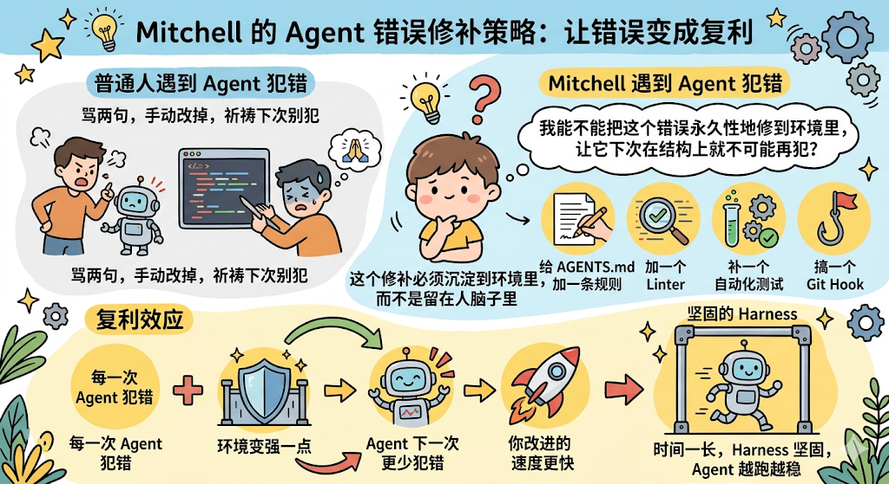
img
随后 OpenAI 发表了《Harness engineering: leveraging Codex in an agent-first world》，提供了一个具体团队实践案例。
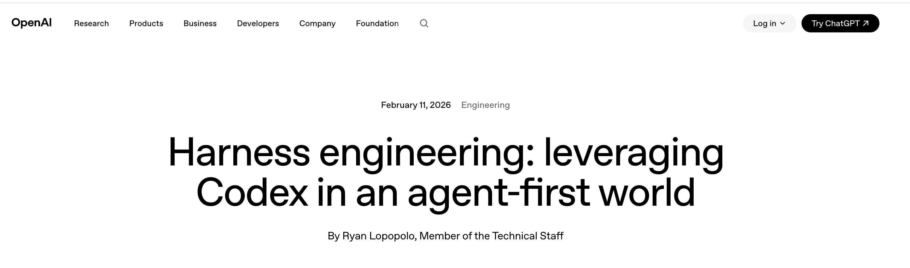
img
文中的规模、周期、代码量和 PR 数是该案例的报告值，不应外推为所有 Agent 团队都能达到的生产指标；“未手写业务代码”也不等于没有人工做需求、审查、环境和验收工作。
这类案例推动了 Harness 一词的传播，但传播度不等于标准化程度。理解它时应回到可复用的工程问题：如何让模型在受控环境中连续行动并被验证。
一个基础设施圈的老法师先喊出来 → OpenAI 几天后发文背书 → 一周内整个 AI 圈开始刷屏。
这种出身决定了它不会像很多 AI 新词一样「炒一波就凉」，它更像是一个在真实工程土壤里长出来的东西。
好，交代完来源，咱们进入正题。
从提示词到 Harness
要真正讲清楚 Harness Engineering 在解决啥问题，咱们不能一上来就讲它。因为它不是凭空冒出来的新概念，而是 AI 工程这几年一步一步「被逼出来」的结果。
你去复盘一下过去两年 AI 圈的变化就会发现一件特别有意思的事：AI 工程的重心，其实已经悄悄换过三次了。
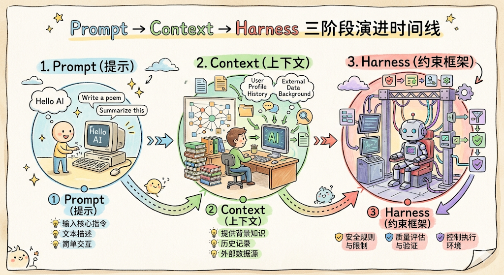
img
一开始大家在聊的是 Prompt Engineering，提示词工程。那个时候所有人都相信一件事：模型不是不会，只是你没把话讲明白，只要提示词写得够好，啥都能搞定。
后来大家发现事情不对劲。Agent 火起来之后，模型要做的事情越来越复杂，光「把话讲清楚」根本不够，它还得「知道」该用什么信息才行。于是 Context Engineering，上下文工程，接棒成为 AI 工程圈的新主角。
但这事到这儿还没完。当大家把上下文管得越来越精细之后，又发现了一个更扎心的问题：信息都给对了，模型在长链路任务里还是会跑偏。
提示词没毛病、上下文也没毛病，可它就是做不稳。正是在这个背景下，Mitchell Hashimoto 的那篇博客和 OpenAI 的那个百万行代码实验几乎同时出现，Harness Engineering 就这么被推到了台前。
你有没有感觉出这条脉络？这三个阶段不是谁取代谁，而是每一步都在上一步撞到天花板之后，继续往前啃出来的：
- Prompt Engineering 解决的是：怎么让模型「听懂」你想干啥
- Context Engineering 解决的是：怎么让模型「知道」该用什么信息
- Harness Engineering 解决的是：怎么让模型在真实执行里「持续做对」一连串的事
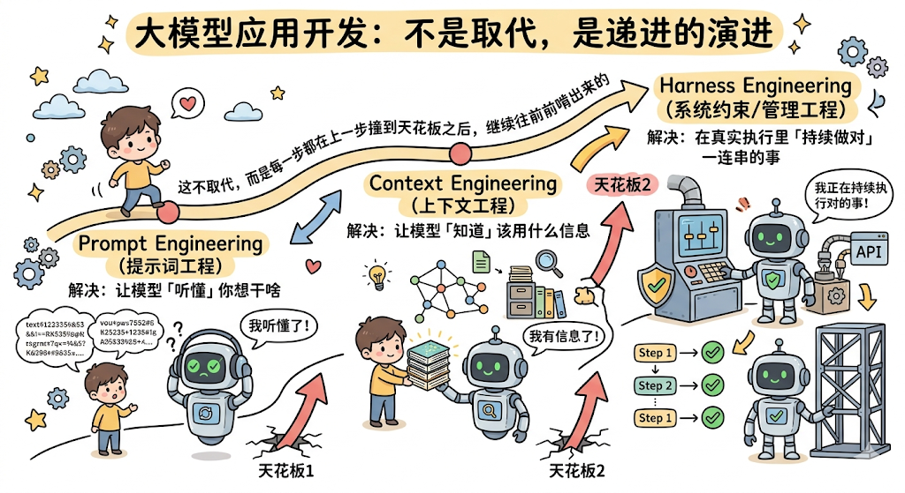
img
听起来三句话好像差不多对吧？但你一定要相信我，这三件事的难度和工作量，是层层放大的。
把一句话讲明白难吗？不难。把一整套信息在合适的时机送给模型就开始有点门槛了。而要搭出一整套能让模型「持续稳定交付」的运行环境，那完全是另一个量级的工程活。
这也顺便解释了一个很多人感到困惑的现象：同样是用 Claude 或者 GPT 这几个大模型，为啥有的团队做出来的 Agent 又稳又能打，到别人手里却一跑就跑偏？
差的往往不是模型，而是围绕模型搭起来的那套东西，到底有没有做到位。
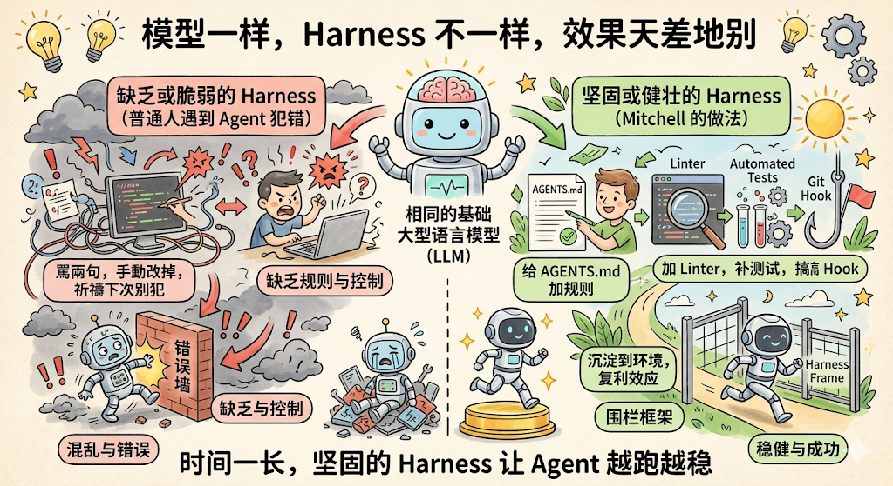
img
所以接下来，我就按照「从提示词到 Harness」这条路径，带你一个阶段一个阶段往下走。
- 先看看 Prompt Engineering 当年解决了啥问题、又撞上了啥天花板；
- 然后看看 Context Engineering 是怎么接棒的、又在哪儿遇到了新的瓶颈；
- 最后再来讲 Harness Engineering 到底是怎么在这两个天花板之上，又往前顶了一大截。
走完这条路，你对 Harness 到底是个啥，心里就会有一个非常清晰的底。
第一阶段：Prompt Engineering，先让模型「听懂」你
要讲清楚 Prompt Engineering，得先聊一个更基础的问题：大模型到底在干啥？
你平时用 ChatGPT 也好，用 Claude 也好，看到的都是一个对话框，输入一句话，下面给你输出一段话。但如果把这层外壳扒掉，里面其实就一个东西：一个特别大的参数文件，存在硬盘上，加载到显卡的内存里。
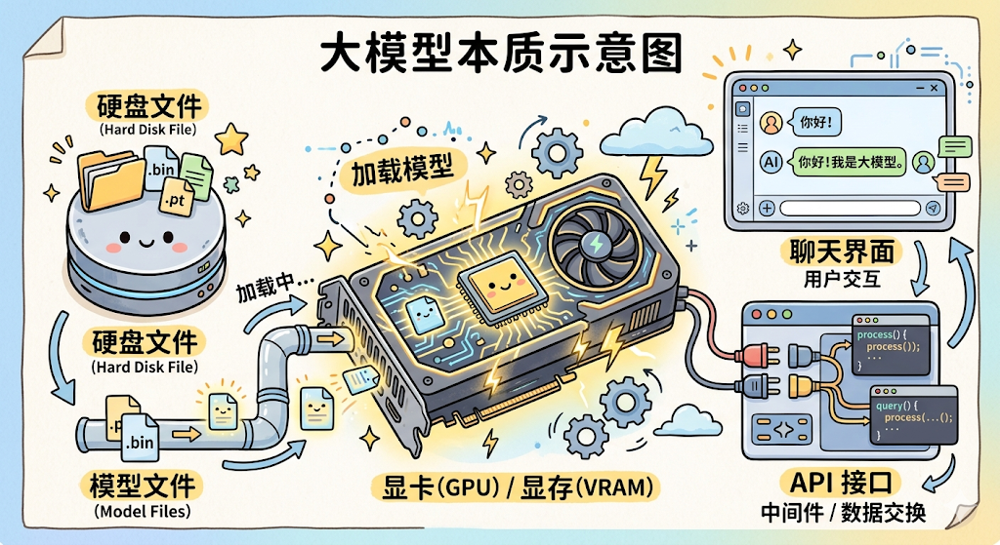
img
这个文件本身啥也不是。给它配一个 HTTP 接口，它就成了所谓的「大模型 API 服务」。给这个 API 套一个聊天界面，它就成了 ChatGPT；套一个代码编辑器，它就成了 Cursor、Trae 这种 AI IDE。
那这个参数文件本身是怎么工作的呢？核心训练目标通常是根据上下文预测下一个 token（离散文本单元），而不是简单预测下一个汉字；生成时还会受到解码、工具和系统编排影响。
注意我说的是「预测」，不是「思考」，这个区别很重要。它本质上是在猜你想要什么，然后把它觉得最可能的字一个一个往外吐。你给它的输入越模糊，它猜的范围就越大；你给它的输入越具体，它猜的范围就越收敛。
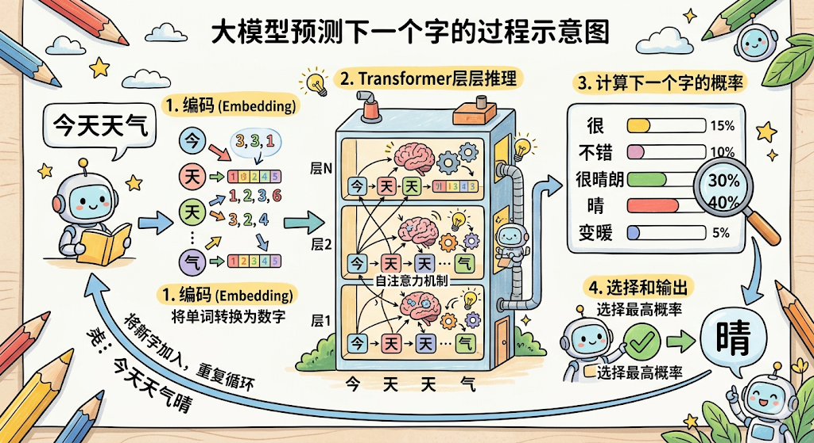
img
知道了这个原理，你就能理解为什么同一个任务换一种表达，结果可能有明显差异；具体收益必须在目标任务上评测，不能承诺固定倍数。
举个例子。你丢一段代码给大模型，说「加个排序」。它会怎么回？大概率是给你回一段排序的代码片段，告诉你「就这么写」。但你拿到这段代码一看，傻眼了：它没说放在哪儿，也没说要不要改其他函数，更没把完整的代码给你。
那如果你换一种说法呢？「这是我的完整代码，请帮我加上对 users 列表按年龄从大到小的排序，注意保留原有的所有逻辑，最后输出完整代码」。这次它给的结果一下就靠谱多了。
为啥？因为大模型本质上是一个对上下文极度敏感的概率生成器。
什么叫敏感？就是你给它什么样的输入，它就会沿着那个方向生成。
你给它一个角色身份，比如「你是一个资深 Java 工程师」，它就会偏向用 Java 工程师的思路回答；你给它几个示例，比如「按照下面这个例子的格式来」，它就会沿着那个范式补全；你强调什么样的约束，比如「不要修改我已有的代码」，它就会把这个约束当成重点。
你会发现，写提示词的本质，根本不是在「命令」模型，而是在塑造它的概率空间。你给它的每一句话，都在悄悄地把它的输出往某个方向推。
正因为这种敏感性，大家慢慢摸索出了一套「提示词配方」。一个稍微正式一点的提示词，一般会包含这么几个部分：
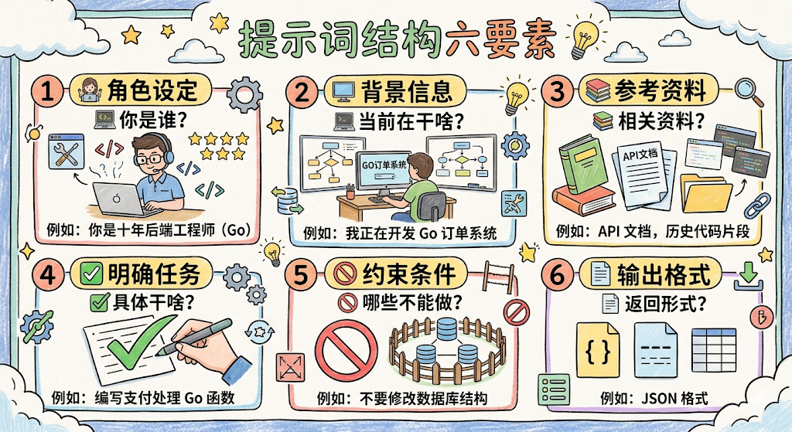
img
- 角色设定：你是谁？比如「你是一个有十年经验的后端工程师」
- 背景信息：当前在干啥？比如「我正在用 Go 写一个订单系统」
- 参考资料：相关的文档、历史对话、代码片段
- 明确任务：具体要你干啥
- 约束条件：哪些不能做，比如「不要修改其他文件」
- 输出格式：希望以什么形式返回，JSON、Markdown 还是表格
把这些东西按一定的结构组装起来，就是一份比较完整的提示词。这种有意识地去设计和调整提示词、让模型稳定输出你想要的内容的技术活，就叫 Prompt Engineering，提示词工程。
它主要改善任务表达、约束和输出契约，但不能弥补缺失事实、工具权限、模型能力或验证机制。
提示词工程在大模型刚火起来的那一两年，作用是非常大的。因为那个时候大家做的事情都很简单：聊天、写文案、翻译、问答。这种任务的特点是「短链路」，一句问一句答就完事了，提示词写好了基本就搞定。
但很快，大家想做的事情变复杂了，提示词工程就开始撑不住了。
举个例子。你让大模型帮你「分析一下我们公司去年的财报」，它再聪明，没看过你的财报，它能分析啥？你让它「按照公司内部的代码规范帮我写一个新功能」，它没看过你们的规范，它怎么知道该怎么写？你让它「在我们已有的几十个 API 之间做一些调用组合」，它根本不知道你有哪些 API。
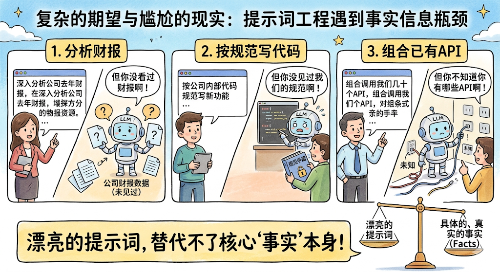
img
这个时候你就会发现一个很尴尬的事实：提示词写得再漂亮，也替代不了「事实」本身。
提示词擅长的，是把任务表达清楚、把约束讲明白，激发模型已有的能力。但它不擅长「凭空补出模型不知道的知识」，也不擅长「管理一大堆动态变化的信息」，更不擅长「在长链路任务里维持稳定的状态」。
说白了，提示词工程解决的是「表达」的问题，不是「信息」的问题。
于是第二阶段就来了：Context Engineering。
第二阶段：Context Engineering，让模型「知道」该用什么信息
为什么 Context Engineering 会突然火起来？因为大家做的产品形态变了。
之前大家做的是聊天机器人，问一句答一句，链路短、状态少。
但后来 Agent 火了，模型不再只是「回答问题」，而是要进到真实环境里去「干活」。它要多轮对话，要调用工具，要写代码，要查数据库，要在多个步骤之间传递中间结果，还要根据外部反馈不断修正自己的计划。
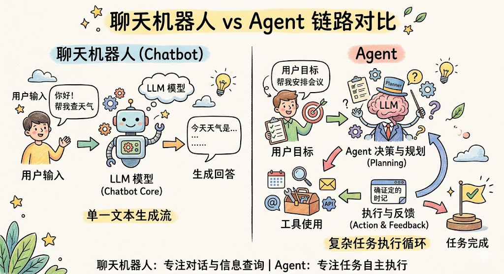
img
这个时候问题就完全变了。系统面对的已经不是「这一次回答对不对」，而是「整条链路能不能跑通」。
举个例子。如果你不是简单地问一句「帮我总结这篇文章」，而是让大模型做一个更真实的任务，比如：「帮我分析这份需求文档，找出潜在风险，结合我们之前几次评审的意见，给出改进建议，最后生成一份发给产品经理的反馈稿」。
你会发现，光靠一句提示词，根本完成不了这个任务。模型至少需要拿到：
- 当前的需求文档
- 历史的评审记录
- 公司的相关规范
- 当前任务的具体目标
- 之前已经分析出来的中间结论
- 收件人是谁、希望用什么语气
这些东西全部加起来，才叫一个完整的「任务环境」。
基于这类多轮、工具和状态问题，工程界逐渐用 Context Engineering（上下文工程）来概括上下文选择、压缩、检索和组装实践；它不是一个单一算法。
什么叫上下文？我用一句最直白的话解释：
每一次发给大模型的所有信息加在一起，就叫上下文。
而我们之前聊的提示词，只是上下文里很小的一部分。一个完整的上下文还包括：用户输入、历史对话、检索到的资料、工具返回的结果、当前的任务状态、中间产物、系统规则、安全约束等等等等。
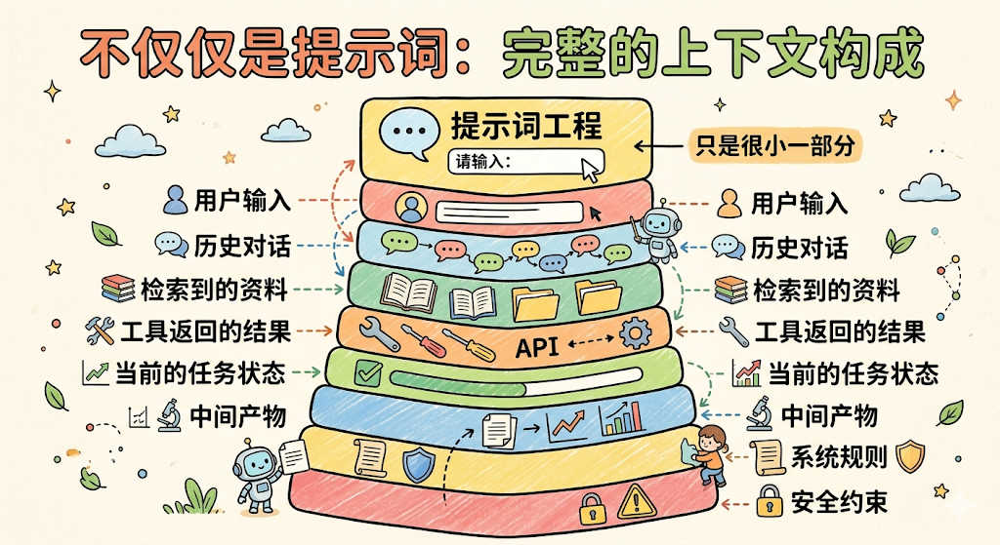
img
理解了这一层，你就能理解 Context Engineering 是在干啥了。它的核心思想就一句话：
模型未必知道，所以系统必须在合适的时机，把正确的信息送进去。
你可能会想：那我把所有相关的资料一股脑全塞进去不就完事了吗？
这里就有一个让人头疼的现实：大模型一次能处理的上下文是有上限的。这个上限叫「上下文窗口」。
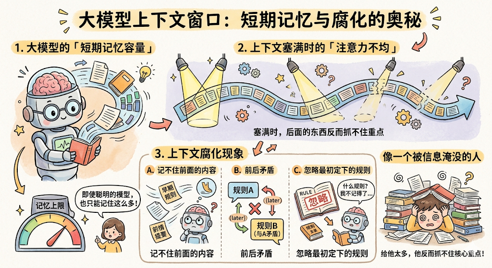
img
你可以把它想象成大模型的「短期记忆容量」。再聪明的模型，一次也只能记住这么多东西。
更要命的是，就算窗口够大，模型对不同位置和不同噪声水平的信息利用也可能不均匀。在一些长上下文任务和评测中，关键信息被噪声包围会降低利用率，社区常把这类现象称为“上下文腐化（context rot）”；程度会随模型、任务和上下文结构变化。
我自己感觉这个特别像一个被信息淹没的人：你给他太多东西要看，他反而抓不住重点。
那怎么办？这就是 Context Engineering 要解决的核心问题：怎么在上下文窗口有限的前提下，把最相关的信息，以最合理的方式，送给模型。
实践下来，它基本上可以拆成三个步骤：
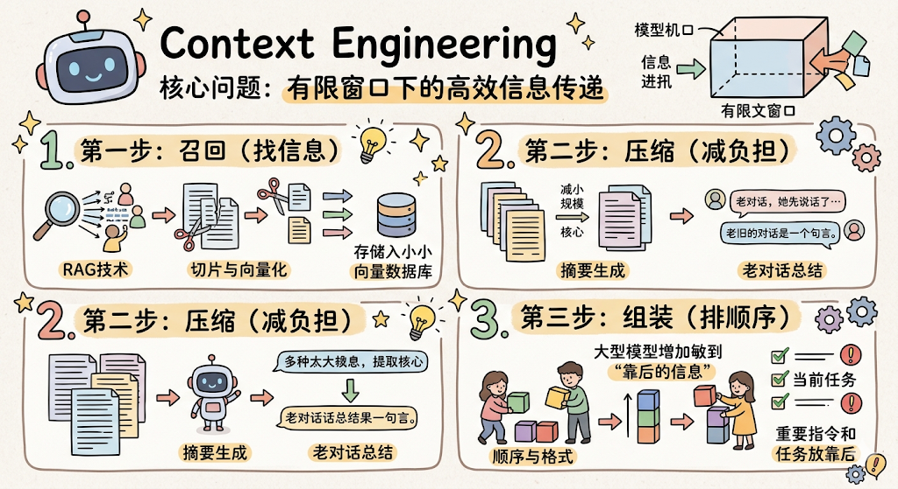
img
- 第一步，召回。说白了就是「找信息」。从一大堆资料里找出跟当前任务最相关的那部分。这里面就涉及到大家熟悉的 RAG 技术：把你的所有文档切成小块，转成向量存起来，每次有问题进来，先去向量数据库里搜出最相关的几块。
- 第二步，压缩。找到的信息可能还是太多，那就压缩。怎么压？常见的做法是先让模型对每一段做个摘要，然后只把摘要送进最终的上下文。或者，对历史对话，把太老的对话压缩成一句话总结，只保留最近几轮的原文。
- 第三步，组装。压完之后还要按一定的顺序、一定的格式组装起来。位置信息可能影响模型对证据的利用，但“越靠后越好”不是通用规律；应通过评测决定系统指令、证据、工具结果和任务状态的布局。
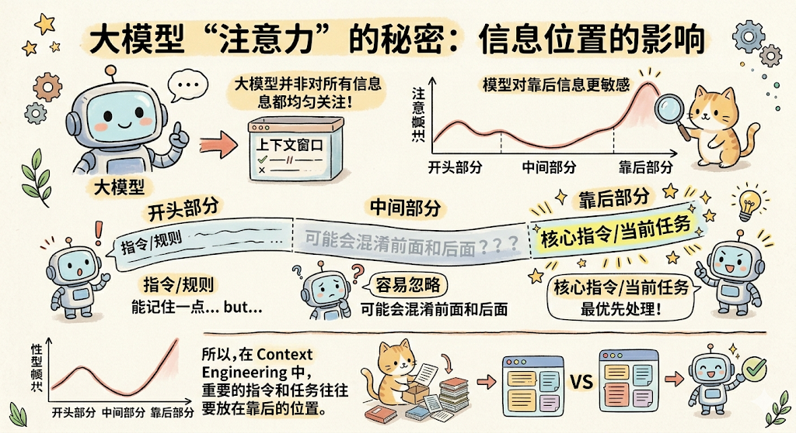
img
不同的 AI 工具，这三步的实现各不相同。这就是为啥同样是用 Claude 模型，你用 Claude Code、Cursor、Trae 这些不同的 AI IDE，效果会差挺多。模型是同一个，但每家的上下文工程策略不一样，所以最后的体验也不一样。
讲到这儿，我想专门聊一下 Anthropic 最近搞的 Agent Skills，因为它特别能体现「上下文工程不是塞得越多越好」这个理念。
很多人做 Agent 的时候，会犯这么一个错误：把所有可能用到的工具说明、所有 SOP、所有参考资料，一上来就一股脑塞进上下文。理论上，模型知道得越多越好，对吧？
但实际上效果往往更糟糕。
为啥？还是那句话：上下文窗口是稀缺资源，信息一多注意力就会被稀释。模型看到的东西一多，反而抓不住当前任务真正需要的那部分。
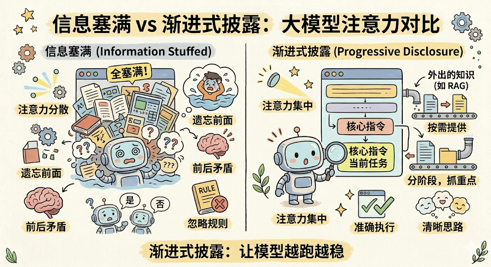
img
Agent Skills 提出的思路叫「渐进式披露」：一开始只给模型看每个能力的「目录」，告诉它「我有这些工具、这些 SOP、这些参考」。
等模型真的判断「我现在需要用某个工具」的时候，再把那个工具的详细说明、参数定义、使用示例动态加载进来。
这个思路其实非常重要，它告诉我们：上下文优化的本质不是「给得更多」，而是「按需给、分层给、在正确的时机给」。
讲到这儿，Context Engineering 的核心思想基本就讲完了。它在 Prompt Engineering 的基础上又往前走了一大步：从「把任务讲清楚」升级到了「把信息送对」。
但你以为这就是终点了吗？
不是。
第三阶段：Harness Engineering，让模型「做对」一连串的事
后来大家又发现了一个更麻烦的问题。
你把提示词写得再漂亮，把上下文管理得再完美，模型在「单步」上的表现确实越来越好了。但只要任务的链路一长，模型就还是会出问题。
什么问题？比如：
- 计划做得很好，但执行的时候突然跑偏了
- 调用工具调对了，但理解错了工具返回的结果
- 在一个很长的任务链里，已经悄悄偏离初衷了，但系统完全没察觉
- 跑着跑着突然忘了自己最初要干啥
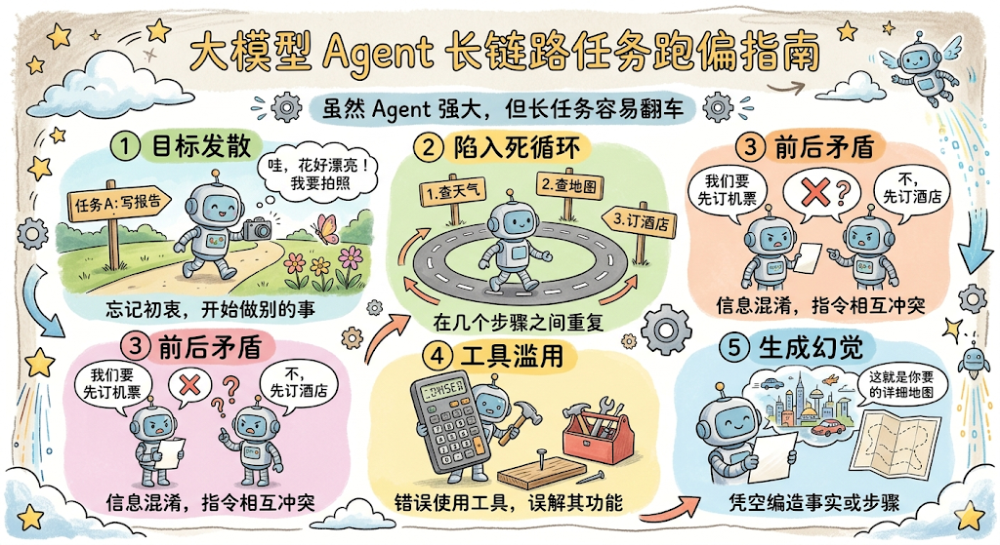
img
你仔细品品这个问题。提示词工程优化的是「意图的表达」，上下文工程优化的是「信息的供给」，但这两个其实都还停留在「输入侧」。
而当模型真正开始「连续行动」的时候，会出现一个全新的问题：谁来监督它？谁来约束它？谁来在它跑偏的时候把它拉回来？
这就是第三阶段要解决的事情。
Harness 这个英文词，直译过来叫「马具」，或者说「缰绳」。
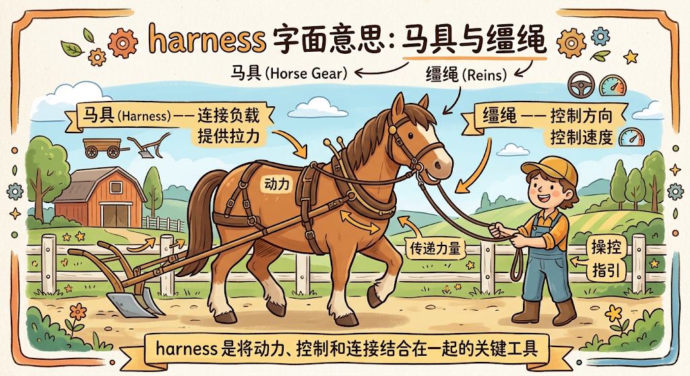
img
为啥用这么一个词来命名一个 AI 工程概念？想象一下你骑马的场景：马本身有强大的力量，能跑能跳能驮东西，但如果没有缰绳和马具，这股力量就是失控的。马可能往悬崖上跑，可能甩你下来，可能跑去吃草不回来了。马具的作用，就是让这股力量为你所用。
放在 AI 系统里，这个比喻就特别贴切了。当模型从「回答问题」走向「执行任务」，系统就不能只负责喂信息，还要能「驾驭」整个执行过程。这就是 Harness Engineering 的出发点。
如果说前两代工程关注的是「怎么让模型更会想」，那 Harness 关注的就是「怎么让模型不跑偏、跑得稳、出了错还能爬起来」。
讲到这儿，我用一个特别通俗的例子，把这三个阶段的区别一次性给你讲清楚。
假设你是一个销售经理，要派一个刚入职的新人去做一次很重要的客户拜访。
你会做哪些事情呢？
第一件事，把任务讲清楚。你会告诉他：「见到客户先寒暄，然后介绍方案，再问需求，最后确认下一步」。这就是 Prompt Engineering，重点是把话说明白，不让新人懵。
第二件事，把资料准备齐全。光把流程讲清楚不够，新人还得知道：客户是谁？之前聊过啥？产品报价多少？竞品啥情况？这次会议的目标是啥？这些资料你都得给他。这就是 Context Engineering，重点是把信息供给到位。
第三件事呢？如果这是一个特别重要的客户，你光把流程讲清楚、资料给齐了，你心里还是不踏实对吧？你还会做更多的事情：
- 让他带一份 checklist 去，每个关键节点都要打勾
- 让他在关键节点实时给你汇报
- 让他录音，回来你要复盘
- 如果发现他拜访过程中跑偏了，马上电话纠正
- 拜访完成后，要按照明确的标准去验收成果
这一整套东西，就是 Harness。它的重点已经不是「把话讲清楚」「把资料给齐」了，而是「有没有一整套机制能持续观测、持续纠正、最终验收」。
是不是一下就清楚了？
关于 Harness 的边界，圈子里常用一个便于沟通的表达：
Agent = Model + Harness
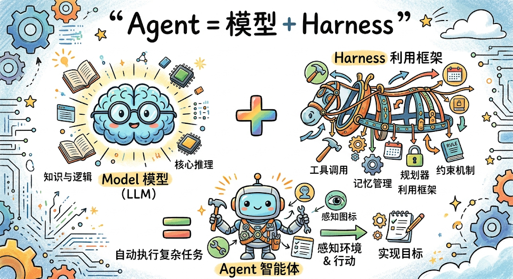
img
它想强调的是：模型之外的工具、状态、上下文、编排、评估和治理，会显著影响 Agent 的可靠性；这不是可计算的恒等式，产品边界也可能把部分能力放在模型服务或平台层。
因此不宜把 Harness = Agent − Model 当成严格边界；它会忽略模型 API、运行时、业务代码和外部服务之间的共同责任。
讲到这儿你可能会问：那是不是 Harness Engineering 出来了，前面那两个就过时了？
不是的。这三者通常是互补关系；可以把 Prompt、Context 和 Harness 看成有重叠的关注范围，但不应假设所有系统都严格按“包含关系”实现。
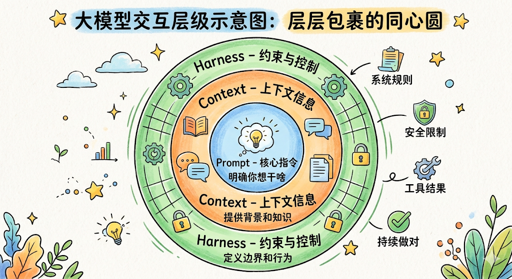
img
- Prompt 是对「指令」的工程化
- Context 是对「输入环境」的工程化
- Harness 是对「整个运行系统」的工程化
在很多系统里，Prompt 是上下文的一部分，Context 管理又是运行时的一部分；但边界会随产品和团队定义变化。做 Harness 时通常会涉及上下文、工具、状态、评估和恢复，不代表每个系统都必须采用同一层次。
所以 Harness Engineering 不是来取代谁的，它是站在更大的系统视角上，把前面这两个都包进去了。
好，到这里 Harness Engineering 是啥、和前面两个啥关系，就基本讲完了。但只懂概念肯定不够，下一章我要把它拆开，看看一个成熟的 Harness 到底包含哪些东西。
Harness 拆开看，里面到底装了些啥？
不同团队的 Agent 系统经常都会遇到上下文、工具、状态、评估和恢复问题，但具体组件、命名和实现差异很大；下面的“六层”是便于面试回答的分析框架，不是行业标准架构。
一个成熟的 Harness 可以按六类职责拆解：上下文、工具、编排、状态、评估观测、约束恢复；项目可以合并、拆分或增加其他层。
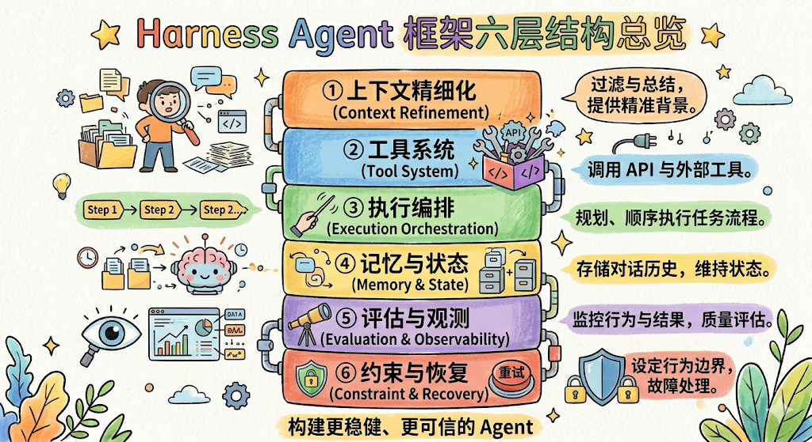
img
这六层看起来有点多，但其实可以按「它在干啥」分成三组：
- 输入侧（让模型看到正确的东西）：上下文精细化管理 + 记忆与状态管理
- 动作侧（让模型做出正确的事）：工具系统 + 任务执行编排
- 校验侧（让模型知道做没做对 + 出错能爬起来）：评估观测 + 约束恢复
这三组对应了一个实用检查顺序：看得准 → 做得对 → 错了能兜底。它是审查框架，不是声称任何成熟 Harness 都具备完全相同的六层。
在真正展开六层之前，我想先把每一层对应的那个「要解决的核心问题」用一张表提前摆到你面前。这张表你可以当成整章的路线图，后面每读完一层，回头瞄一眼，就知道自己读到哪儿、哪些还没读：
| 层 | 这一层在解决的一句话问题 |
|---|---|
| 上下文精细化 | 模型这一轮该看到什么？ |
| 工具系统 | 模型用什么动手？ |
| 执行编排 | 模型下一步该干啥？ |
| 记忆与状态 | 模型跨轮该记住什么？ |
| 评估与观测 | 模型做得好不好有没有尺子？ |
| 约束与恢复 | 模型出错了能不能爬起来？ |
把六类职责串成运行闭环，可以得到一条更适合面试回答的因果链：
flowchart LR
I[目标/权限/上下文] --> D[模型决策]
D --> G{策略与预算闸门}
G -->|允许| T[工具/环境执行]
G -->|拒绝或需确认| H[人工审批/安全处理]
T --> R[结果/错误/超时]
R --> V[校验与评估]
V -->|通过| S[状态/产物持久化]
V -->|失败| C[分类错误/退避/补偿]
C --> D
S --> Q{停止条件}
Q -->|继续| I
Q -->|完成| O[交付与审计]这里最容易混淆的是：提示词和上下文影响“模型看到了什么”，Harness 还要负责“能做什么、做完如何验证、失败如何恢复”。任何外部副作用都应在工具/策略层再次校验。
这六个问题可以作为面试中的检查清单：输入是否充分、动作是否受控、流程是否可恢复、状态是否可追踪、质量是否可测、失败是否有兜底。不同团队会用不同组件回答这些问题。
为了让这六层不至于变成抽象的概念堆，我决定挑一个贯穿整章的具体例子。后面每讲一层，我都会回到这个例子里给你一个具体画面。例子是这样的:
🔧 假设你要做一个 Agent，任务是：每天定时帮你扫一遍 GitHub 上你关注的仓库的新 PR，从里面挑出值得你特别关注的那几个，对每一个生成一段简短的摘要和点评，最后把结果发到你的 Slack。
好，带着这个 PR Review Agent，我们一层一层往下看。
第一层，上下文的精细化管理
先说输入侧的第一件事：模型每次被调用的时候，到底该看到什么？
这里有个特别关键的修饰词，「每次被调用的时候」。我专门强调它是因为这一层很容易和第四层（记忆与状态）搞混。简单区分一下：
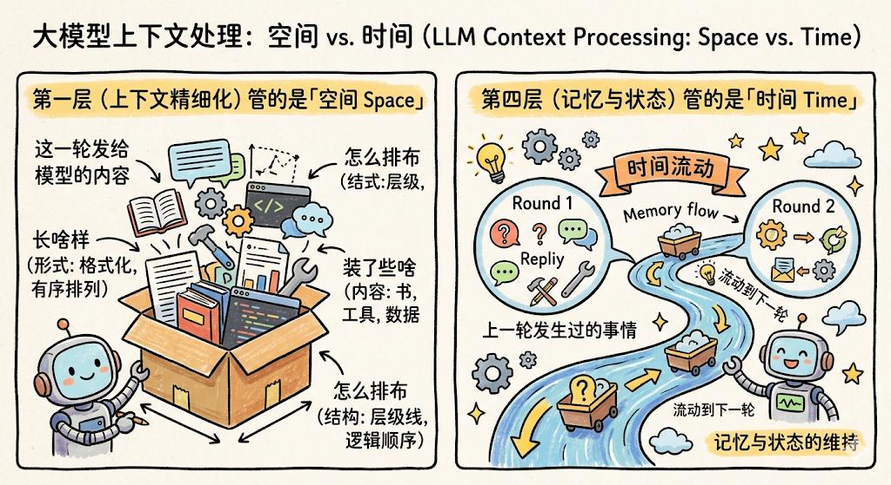
img
- 第一层（上下文的精细化）管的是「空间」：这一轮发给模型的那一坨上下文，长啥样、装了些啥、怎么排布
- 第四层（记忆与状态）管的是「时间」：上一轮发生过的事情，怎么流动到下一轮
你可以把它想成一台相机：第一层是「取景框」，第四层是「胶卷」。两件事都重要，但看的方向完全不同。
回到我们的 PR Review Agent。它每处理一个 PR 的时候，到底该看到什么？最粗暴的做法是把整个 PR 的 diff 全扔给它，这恰恰是最容易犯的错。它真正需要的其实是一组精挑细选的信息：
- PR 的标题和描述
- diff 里真正被改动的那几个文件
- 这些文件在仓库里对应的模块说明
- 作者最近几次提交的风格偏好
- 仓库的 code review 惯例
你塞给它越多无关信息，它的注意力就越散。这个现象 Anthropic 在他们的博客里专门命名了，叫「context rot」（上下文腐化）。他们给的解法是「just-in-time retrieval」，也就是让 Agent 边干活边按需抓信息，而不是一上来就把所有可能有用的东西一股脑塞进去。
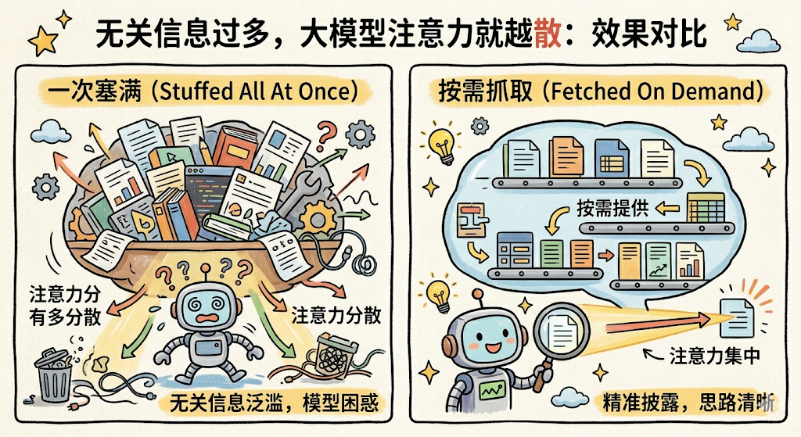
img
所以这一层的核心工作可以浓缩成三件事：
- 第一，把角色和目标钉死。模型得知道自己是一个「PR 审查助手」，当前任务是「挑出值得关注的 PR 并生成摘要」，成功标准是「我挑出来的真的都是该被关注的」。目标不清是常见原因之一，但证据缺失、工具错误、状态丢失和模型能力不足也会导致跑偏。
- 第二，动态筛选而不是一次塞满。只把当前这个 PR 相关的那几块信息拉进来，其余的留在文件系统里，等需要了再取。
- 第三，结构化组织。固定规则（code review 惯例）放一处，动态证据（当前 PR 的内容）放一处，中间结论（我对这个 PR 的初步打分）放一处，三者要分开。否则模型会「自我污染」，也就是用前面错的中间结论去影响后面的判断。
第二层，工具系统的可控调用
聊完「看到什么」，再聊「能做什么」。
没有工具的大模型本质上还是一个文本预测器。它能告诉你一个 PR 应该怎么审，但它没法真的去 GitHub 上读那个 PR；它能写出一段 Slack 消息的文本，但它没法真的把这段消息发到你的频道。
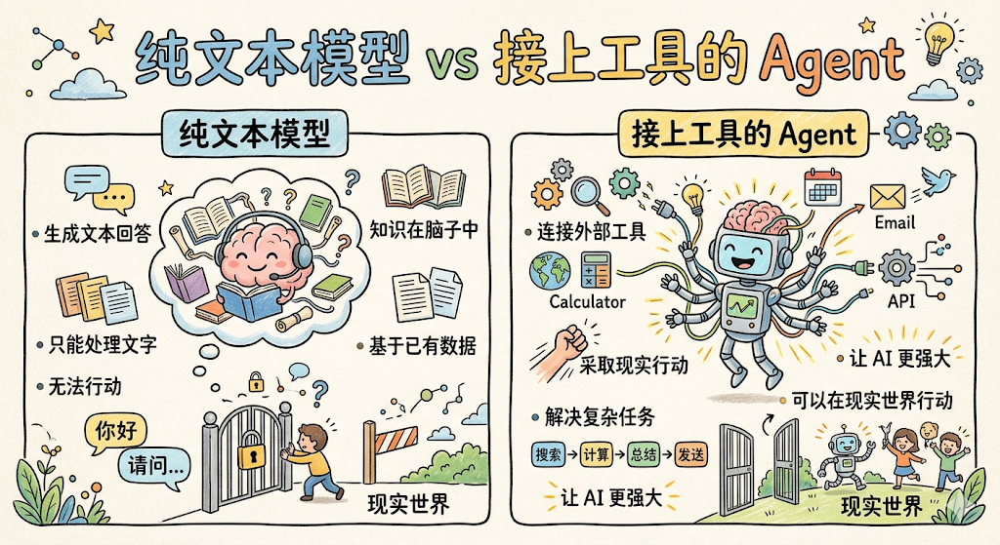
img
接上工具之后，PR Review Agent 才真正活过来。但工具不是接得越多越好。OpenAI 在做 Codex 早期踩过这个坑：他们一开始给 Agent 接了一堆工具，想着「选择多总是好的」，结果 Agent 频繁用错工具、用错时机。后来砍掉一大半，效果反而上去了。
所以这一层你要回答三个问题：
给它哪些工具？ 对 PR Review Agent 来说，至少需要四件：
gh命令行工具：拉 PR 列表、看 diff- 读文件工具：看仓库里的相关代码
- 代码搜索工具：查某个函数在哪儿被用到
- Slack 发送工具：把结果发出去
别的工具，比如「重跑 CI」「直接给 PR 打标签」，除非真的必要，先别加。
什么时候用哪个工具？ 该查的时候要查，不该查的时候别瞎查。比如 Agent 判断「这个 PR 改的函数是不是核心逻辑」的时候应该去代码搜索，而不是凭感觉猜。反过来，明明 diff 已经在上下文里了，再去重新拉一次 PR 纯属浪费。
工具结果怎么喂回模型？ 这条最容易被忽略。比如 Agent 调用代码搜索，拿到 30 条匹配。你是不是要把 30 条原文原样塞回去？不是。你要先做一层提炼，比如只留核心模块的那几条，再喂回去。否则这 30 条原文一进来，上下文又被污染了。
你最近听得很多的 MCP（Model Context Protocol，模型上下文协议），提供了 Host/Client 与 Server 之间的生命周期、能力发现和工具/资源交互约定，可以减少一部分重复适配；版本、传输、认证和业务语义仍需实现方处理，并不是任何工具都能零配置接入任何 Agent。
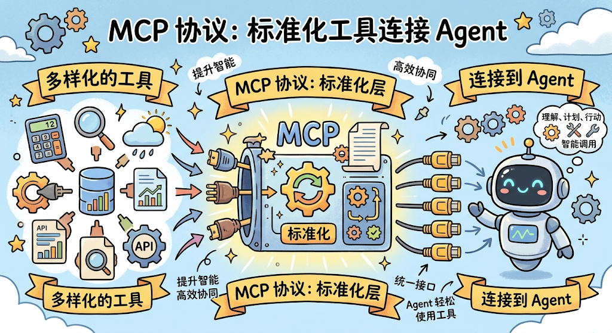
img
第三层，任务执行的全局编排
工具接上了，模型就能动手了。但能动手不等于能做成事。
这里可以用一句工程化的近似来理解：许多 Agent 运行时是“决策 → 行动 → 观察 → 再决策”的循环。ReAct（Reasoning + Acting）是组织这类循环的一种模式，不是所有 Agent 的实现，也不意味着要暴露模型的内部思维。
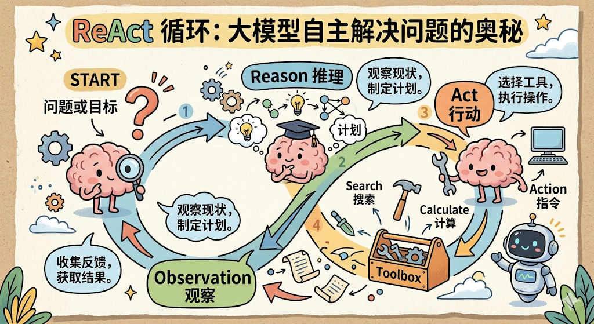
img
听起来很朴素对吧？但魔鬼就藏在这个循环里。
Agent 经常翻车的场景是：每一步它都会做，但把所有步骤串起来之后就不会了。它会拉 PR 列表，会读 diff，会写摘要，但它不知道应该先拉全列表再逐个分析，还是应该边拉边评，最后交付给你经常就是一堆半成品。
这就是第三层的职责：给模型一条明确的工作轨道。
回到 PR Review Agent。它的工作轨道应该是这样：
1. 拉取仓库当前所有开放的 PR 列表
2. 对每一个 PR：
a. 读 diff 和描述
b. 判断涉及的是核心模块还是边缘模块
c. 核心模块的 PR 做深度分析
d. 给出一个重要性打分（1-5）
3. 按重要性排序，选前 3 个
4. 为每一个生成摘要和点评
5. 汇总发到 Slack
6. 检查发送是否成功，失败则重试
有了这条轨道，Agent 就知道「我现在在哪一步，下一步该干啥」。它不会再瞎跑。
除了 ReAct 之外，还有几个业界常见的编排模式你可以记一下名字：Plan-and-Execute（先规划完整计划再执行，适合长链路任务）、Reflexion（每次失败都让 Agent 反思一下再重试）、Tree of Thoughts（同时探索多条思路再选最好的）。不同场景会用不同的编排策略。
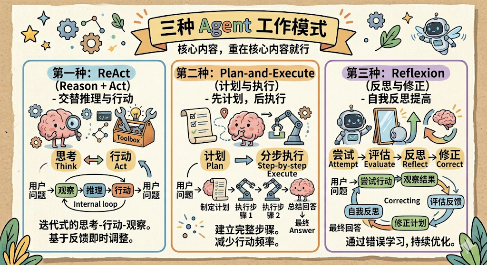
img
第四层，记忆与状态的分层管理
现在聊时间侧：Agent 怎么在「跨轮」之间保持连贯？
没有跨轮状态的 Agent 不能可靠地知道任务是否已经处理过。你的 PR Review Agent 如果没有保存 PR 的版本、处理结果和发送幂等键，明天可能重复审查或重复发消息。
这就是为啥 Harness 必须管状态。
这里要回扣我们开头讲的 Mitchell Hashimoto 和 Anthropic 的一个核心洞察：Agent 的状态不应该放在上下文窗口里，而应该外化到文件系统。
Anthropic 在《Effective harnesses for long-running agents》里给出的具体做法是让 Agent 维护一个 claude-progress.txt 日志、一个 init.sh 启动脚本、加上完整的 git history，作为「长期记忆介质」。下一轮换一个全新的、干净的上下文窗口接手时，从这些文件里一读，立刻就知道「现在到哪一步了」。
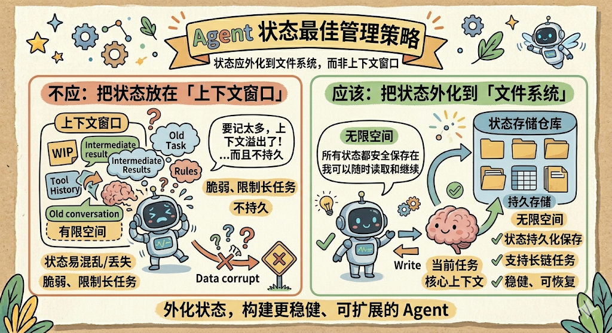
img
放到 PR Review Agent 上，你可以做同样的事。它需要管的状态至少有三类，必须分层存：
- 任务状态：今天已经处理到哪个 PR 了？还剩几个？每个的打分是多少？这类信息写在一个
today-progress.json里，当天任务跑完就归档 - 会话中间结果：当前这一轮里 Agent 对某个 PR 做出的初步判断。这类信息随会话结束就可以丢，不用持久化
- 长期记忆和用户偏好：你喜欢关注什么类型的 PR？你特别看重哪些模块？这类信息写在常驻的
user-preferences.md里，每次调用都注入
你发现没有？这三类记忆的生命周期完全不同：任务状态活到任务结束，会话中间结果活到当轮结束，长期记忆跨所有任务存在。混在一起就乱了，分清楚才能用好。
顺便说一句，Claude Code、Cursor、Trae 这些 AI IDE 里的规则文件（例如 CLAUDE.md / .cursorrules），可以作为项目约束或持久化说明的一种实现，但它们不是事实记忆，也不应替代任务状态数据库。
有些平台会自动加载规则文件，有些则按目录、会话或任务按需加载；规则文件可能被截断、覆盖或与当前分支不一致，因此关键约束仍应由工具权限、测试和代码策略强制执行。
第五层，独立的评估与观测体系
这一层是最容易被跳过、但跳过之后就进退两难的一层。
先看一个真实场景。我见过太多团队，做出一个 Agent 之后高高兴兴上线，结果跑了两周才发现：这玩意儿的实际成功率只有 50%。
问题可能不是“不出结果”，而是结果缺少可靠验收，团队又没有机制发现错误或回归。
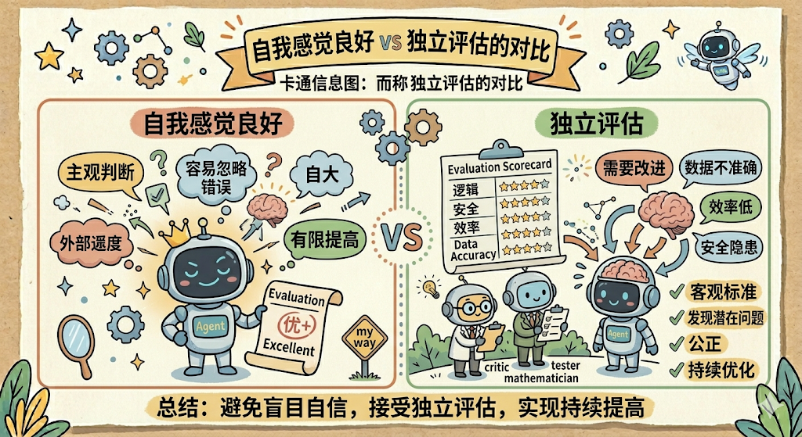
img
这就是没有第五层的下场。
那第五层到底要做什么？我把它拆成两件事：一件是有个尺子，另一件是能看到每一次的量。
尺子：Eval 集（这一层真正的核心）
Eval 集（evaluation set）是做 Agent 开发的业界标准做法，也是这一层的灵魂。
简单说就是：准备一批典型任务和可判定的成功标准，然后每次你对 Harness 做了改动（比如改了 CLAUDE.md、加了一个新工具、调整了编排流程），都让 Agent 把这批任务再跑一遍，比较成功率、成本、延迟和安全回归。
对 PR Review Agent 来说，一个最小可用的 Eval 集可能是这样：
- 从过去一段时间挑一组具有代表性的真实 PR（20 个只是示例）
- 每一个都标注「是不是重要」「摘要应该怎么写」
- 每次改完 Agent 就跑一遍这 20 个，看它挑对了几个、写对了几个
没有可重复的 Eval 集或其他验收机制，对 Agent 的判断就容易停留在“我感觉这次变好了”。
LangChain 的公开案例曾报告通过 Eval、trace 回放和迭代改善某项 Terminal Bench 结果；具体分数、榜单和测试配置属于该案例，不能直接外推到其他任务或版本。
工程级 Agent 通常需要任务集、trace、回归和线上指标；规模和实现方式可以不同，但没有可重复评估就很难判断改动是否真的改善了系统。
量：Trace + 日志 + 指标
有了尺子还不够，你还得看到 Agent 每一次的真实足迹，也就是它每一步做了什么决策、调了哪个工具、拿到什么返回、花了多少 token。
这就是 LangSmith、Langfuse 这类 trace 系统存在的意义。能看到 trace，你才能定位失败那一步发生了什么，才能往 Harness 里补上对应的修复。
这一层做到位之后，你对 Agent 的调试就从「猜」变成了「看」。
第六层，约束校验与失败恢复机制
最后一层。在真实环境里，失败不是例外，是常态。
你的 PR Review Agent 真跑起来之后，一定会遇到各种奇形怪状的失败：GitHub API 限流、某个 PR 的 diff 太大把上下文冲爆、Slack webhook 过期、Agent 误判了一个无关 PR 然后疯狂读代码把 token 耗光一半预算……如果没有恢复机制，每次失败都是从头再来。
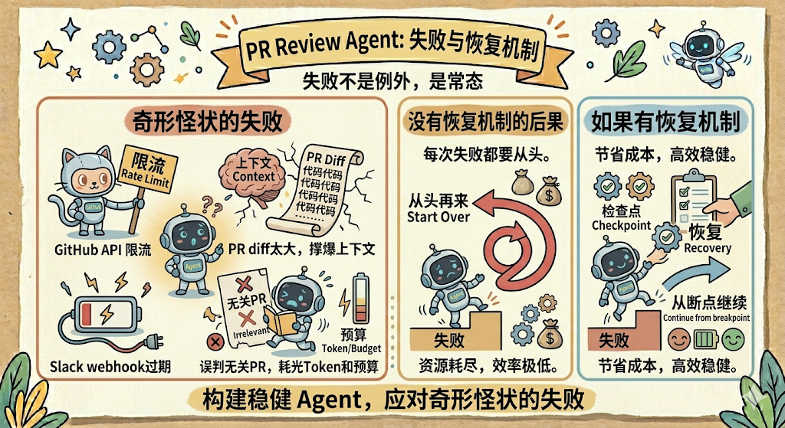
img
这一层要做三件事：
约束：定义「什么事 Agent 不能做」
对 PR Review Agent 来说，约束可以包括：「一次最多分析若干 PR」「不能对已 closed 的 PR 再评论」「不能直接修改 PR 本身」「超过预算就停下」。具体阈值应由成本、延迟和风险预算决定。这些约束最好硬编码到代码或策略里，而不是只写在提示词里靠 Agent 自己遵守。
校验：在每一步输出前后都做自动检查
比如 Agent 给出摘要后先跑一道格式校验（是不是 Markdown？几个段落都在？），发送到 Slack 前先检查频道名是不是在白名单里。校验不是审美品味，是硬规则。
恢复：失败之后有预案
GitHub 限流 → 等一段时间后重试；Slack 发送失败 → 先落到本地队列，下次重试；token 快耗光 → 立即停下并保存进度，下一轮继续。每一种典型失败都应该有一条明确的恢复路径，而不是一股脑全挂掉。
这三件事加起来，才能让 Agent 从「能跑」升级到「能在生产环境跑」。
讲到这儿，六层就全部展开完了。现在你可以再回去翻一眼章节开头那张「六问对应表」，把每一层和它对应的那个问题在心里重新对一遍。
img
这一轮你对这六个问题的理解，应该和一开始看的时候完全不一样了，那些问题背后的门道你都见过了。
还记得开头那一章我们讲过 Mitchell Hashimoto 的「复利效应」吗？他说 Harness 的核心是「每次 Agent 犯错，都把修复沉到环境里」。那个修复到底沉到哪儿？答案就是这六层的其中某一层：
- 你发现 Agent 总是漏掉某个上下文信息 → 去改第一层
- 你发现它总是用错工具 → 去改第二层
- 你发现它步骤乱 → 去改第三层
- 你发现它跨天记不住进度 → 去改第四层
- 你发现你没法判断它做得好不好 → 去搭第五层
- 你发现它一失败就崩溃 → 去强化第六层
所以这六层不是一张「必须一次搭完」的任务清单。它是一张路标，告诉你下一次 Agent 犯错时，你的修复应该落到哪里。
随着时间推移，这六层的每一层都会被你一点一点填充、加固、打磨，你的 Harness 就是这样一寸一寸长大的。
讲到这儿，Harness 装了些啥你心里应该有谱了。
但你肯定还有疑问：这些东西听起来都对，但大厂真的是这么做的吗？具体是怎么落地的？
下一章我就来讲这个：抓 5 个真实的工程难题，看看大厂是怎么解的。
Harness 有什么难点？
讲完六层能力的骨架，你可能会觉得这套东西好像挺有体系的。但真要动手做，各大公司都会告诉你一个共同的感受：概念清晰是一回事，落地是另一回事。
下面我挑 5 个大厂在真实项目里踩过的、特别典型的坑给你看看。
你会发现 Harness 真正的难度根本不在蓝图，而在这些具体的细节里。每个难题我都会用同一种结构来讲：先看现象是啥，再看大厂是怎么反常识地解的，最后提炼出一条你可以直接记住的原则。
难题一，Agent 跑久了为啥会越走越偏？
这是几乎所有做长链路 Agent 的团队都会遇到的问题。
现象是这样的：一开始 Agent 表现挺好，目标清晰，步骤明确。但跑着跑着，你会发现它开始「忘」。它忘了最初定的目标，忘了之前已经做过的决定，开始重复劳动，开始偏离主线。
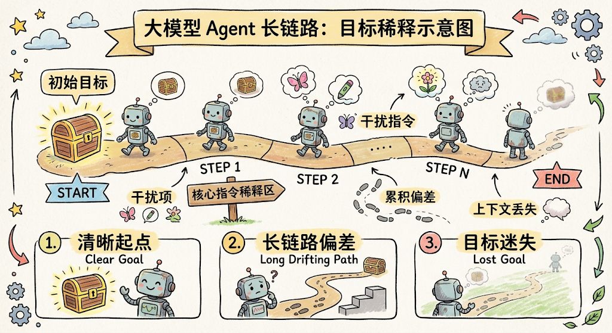
img
一个 Cognition 针对特定模型/任务的公开案例把长任务中的提前收尾倾向称为「上下文焦虑」（Context Anxiety）；这是案例术语，不是所有模型都具备的官方能力或诊断指标。
什么意思呢？就是模型自己好像也能感觉到「我快撑不住了」。当它觉得上下文窗口快用完的时候，模型不仅开始丢细节，还会出现一种奇怪的行为：它开始着急地想收尾。它会突然简化方案、跳过验证步骤、急匆匆地宣布「任务完成」。
该案例还讨论了模型对剩余上下文容量的估计可能不可靠；这类现象应在目标模型、上下文结构和任务集上复测，不能当作普遍心理状态。
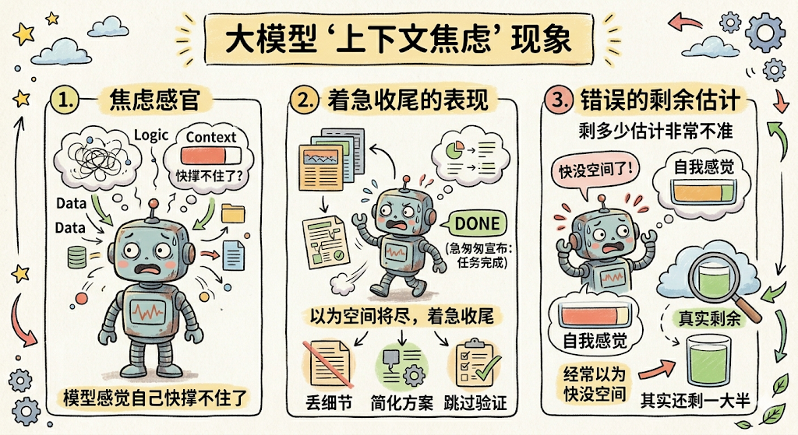
img
你品品这个现象，是不是特别像一个被任务压垮的人？
很多团队遇到这个问题，第一反应是做「上下文压缩」（Context Compaction）：把前面的历史压成摘要，腾出空间继续跑。
这个思路有时有效，但在长链路任务中，单纯压缩历史未必足够；Anthropic 的相关案例进一步讨论了上下文重置与外化状态。
在该案例中，单纯压缩历史未必能消除长链路失焦，因此作者尝试用上下文重置和外化状态；这是一种工程策略，效果要由具体任务评估，不能据此断言某个模型必然“带着负担”。
一种可选策略是 Context Reset：结束当前上下文窗口，使用外化状态让新的上下文接手。它会丢失未持久化的细节，也需要可靠的交接文件、数据库或队列。
那 Context Reset 具体怎么落地？
Anthropic 的相关案例给出了一种具体做法：让 Agent 跨多轮接力跑，把进度和环境信息外化到文件系统；生产系统也可以使用数据库、对象存储或任务队列。
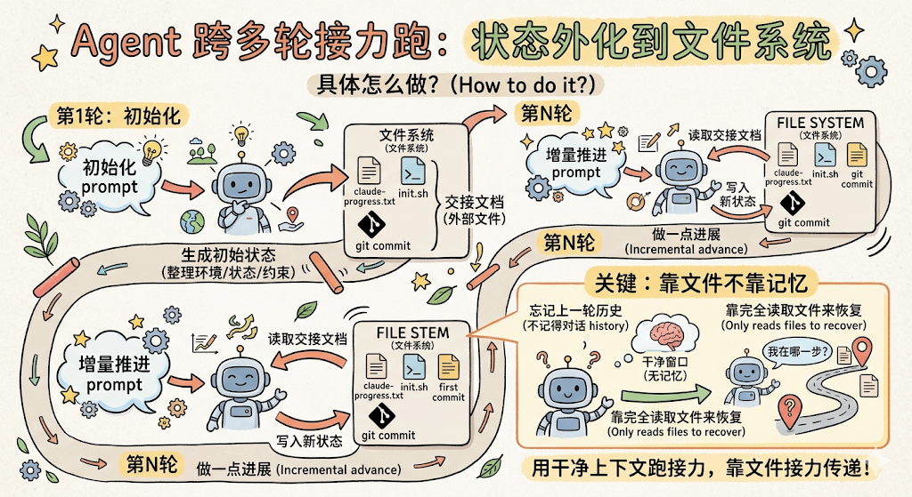
img
具体怎么做？整个系统其实只有一个 Agent，系统提示词、工具集、整套 harness 全都一样。
真正在变的只是每一轮的初始 user prompt：
- 第一轮用一个专门的「初始化」prompt，让 Agent 把环境信息、项目状态、约束条件整理好，写到一份
claude-progress.txt日志、一份init.sh启动脚本、一个初始 git commit 里； - 后续每一轮用一个专门的「增量推进」prompt，让它做一点进展，然后把新状态再写回这几份文件。
关键在于：每一轮可以使用新的上下文窗口，不依赖上一轮的聊天历史，而靠经审查的交接状态恢复进度；“完全干净”和“只读文件”是该案例的实现方式，不是唯一方案。
该案例把首轮初始化和后续编码称为 initializer agent / coding agent，并说明它们可以是同一个 Agent 配置、只是启动提示不同；其他系统也可能采用不同角色或不同模型。
这个架构的关键是把可恢复状态外化，而不是把上下文窗口当作唯一记忆。外化状态仍可能丢失、过时或被错误修改，因此要做版本、校验、权限、备份和一致性检查。
这特别像我们在工程里遇到内存泄漏的时候是怎么做的。你不会拼命去优化内存，你会直接重启进程，把状态从磁盘恢复出来。Agent 的长期运行，用的是同一套思路。
原则一：重启胜过修补，状态沉到文件里，Agent 随时可以在一个干净的上下文窗口里接力继续。
难题二，让 Agent 自己给自己打分，为啥总偏乐观？
这是另一个特别隐蔽的问题。
很多人做 Agent 的时候是这样的：让 Agent 干活，干完之后再让它自己评估「做得怎么样」。看起来挺合理对吧？让它有一个自我反思的环节。
但实际效果可能偏乐观，尤其在没有客观验收标准的任务上；“永远”是夸张表达。
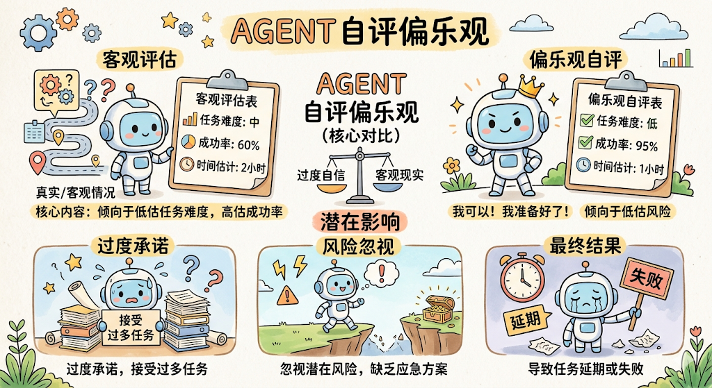
img
特别是在那些没有标准答案的任务上，比如「设计一个用户界面」「写一篇有说服力的文案」「评估这段代码的可读性」，自评的偏差会特别明显。它会自动忽略自己做得不好的部分，然后给自己打一个还不错的分。
为啥会这样？想想咱们人就理解了。让一个人自己给自己打绩效，他会公平吗？很难。
一个重要的工程建议是让生成和验收尽量独立；可以是不同 Agent、不同规则、不同测试或人工，而不一定是两个“人”。
所以他们在另一篇《Harness design for long-running application development》里搞出了一个三角分工：
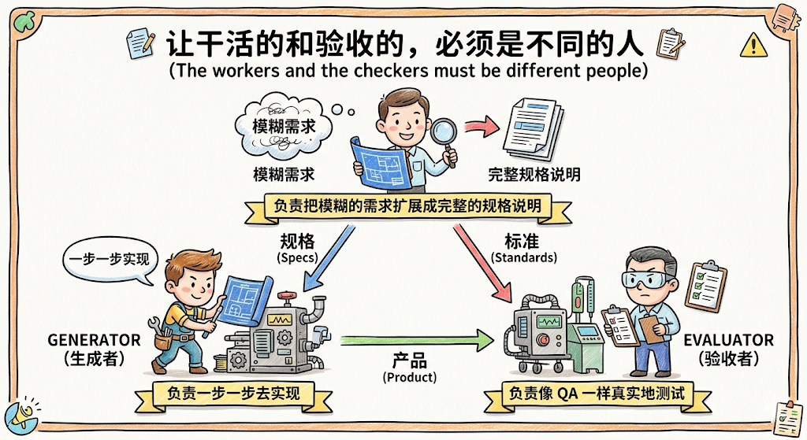
img
- Planner（规划者）：负责把模糊的需求扩展成完整的规格说明
- Generator（生成者）：负责一步一步去实现
- Evaluator（验收者）：负责像 QA 一样真实地测试
更关键的是，Evaluator 不应只看模型自报或静态文本；在适用时，应在受控环境操作页面、运行测试、检查真实结果。这样能增加证据，但也要关注测试覆盖、夹具污染和评估器自身偏差。
当规划、生成和验收的证据与权限足够独立，系统更容易形成可审计循环：规划 → 生成 → 验收 → 修复 → 再验收。小任务也可以用静态测试或人工验收，不必强行拆成三个 Agent。
原则二：生产和验收尽量分离，验收应尽可能接触可复现的真实执行证据。
难题三，Agent 总是失败，工程师到底该干啥？
这个难题比前两个都更深，因为它动的不是解法，是工程师自己的角色定位。
先说现象。当 Agent 反复失败的时候，一般人遇到的本能反应只有两个：要么再调调提示词，要么换个更强的模型。
但 OpenAI 在做 Codex 项目的时候，实践告诉他们：工程师本能反应的这两招，其实都是错的方向。
该 Codex 案例报告了以 Agent 生成大量代码、由工程师负责规格、环境、审查和验收的工作方式；“百万行/几乎不手写”是案例语境，不代表所有团队都应或能够照搬。
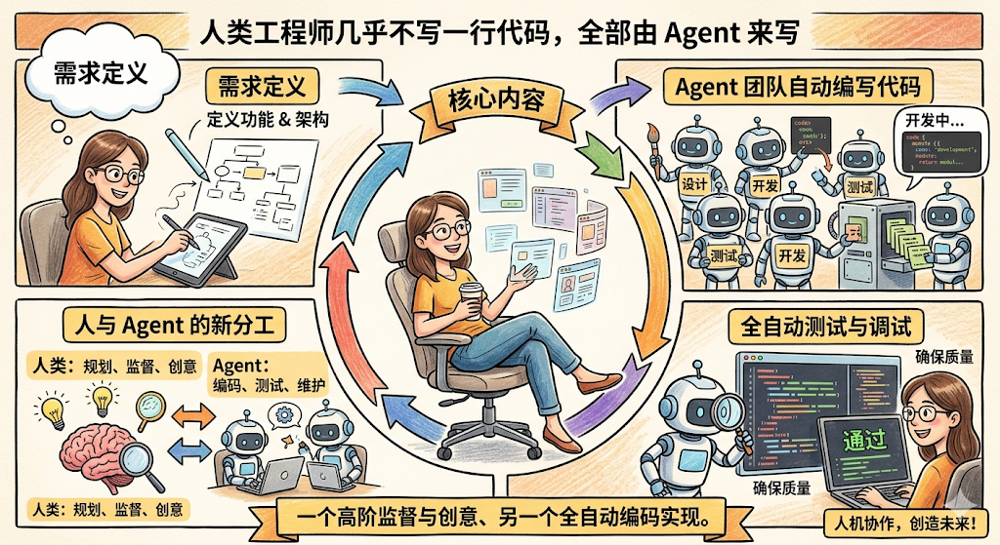
img
那人类工程师到底在干啥？从他们这套实践里，你能看到工程师的工作重心其实都压在了三件事上面：
- 把产品目标拆解成 Agent 能力边界内的小任务，确保每一件事都是 Agent 接得住的
- 当 Agent 反复失败时，不是去催它「再努力一点」，而是去看它「环境里缺了什么能力」，然后把那个能力补进环境里
- 建立反馈链路，让 Agent 真正能看到自己工作的结果，而不是两眼一抹黑地瞎跑
你看出第二条的意思了吗？这其实是一次思维方式的根本转变。
以前遇到 Agent 写代码有 bug，传统做法是加一句提示词「请仔细检查代码不要有 bug」，然后祈祷模型这次听话。
而 Codex 团队的做法是：给 Agent 接上 lint、单测、运行环境，让它自己写完自己跑，看见 bug 自己改。同样一个问题，前者是在求模型发挥，后者是在改造环境，彻底决定了 Agent 下次会不会再犯。
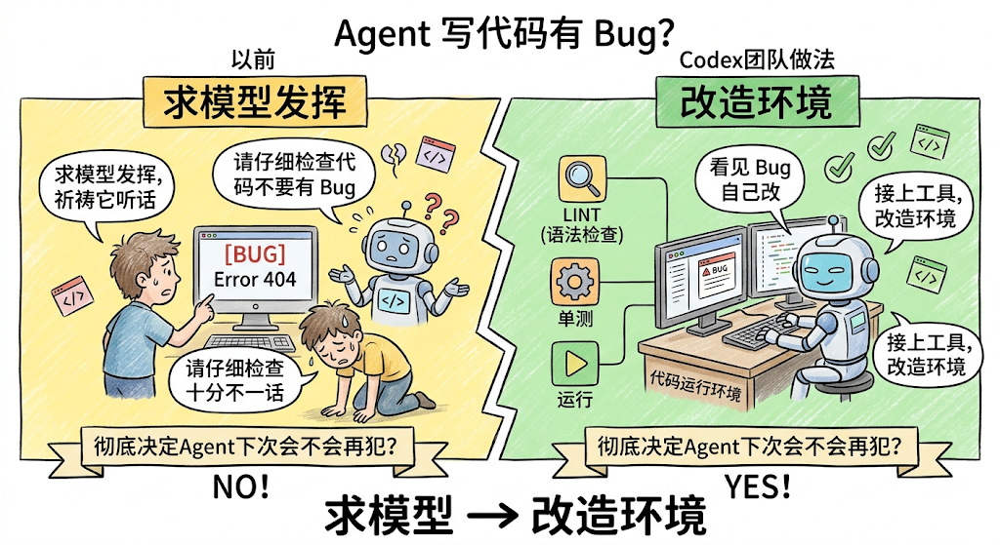
img
所以你看，在 Codex 这种 Agent 主导的工程体系里，工程师的价值不再是「我一天能写多少行代码」，而是「我能为 Agent 设计多好的一套运行环境」。这才是未来程序员真正的技术含量所在。
原则三：Agent 反复失败的时候，别问模型能不能更努力，要问环境还缺什么。
难题四，规范文件越写越长，为啥 Agent 反而更糊涂？
这个是 OpenAI 自己亲自踩过的坑，说出来挺打脸的。
公开案例描述过一种常见失败：把所有规范和最佳实践塞进一个很大的 AGENTS.md，希望规则越全越不容易出错；这类规则文件会增加上下文噪声和维护成本。
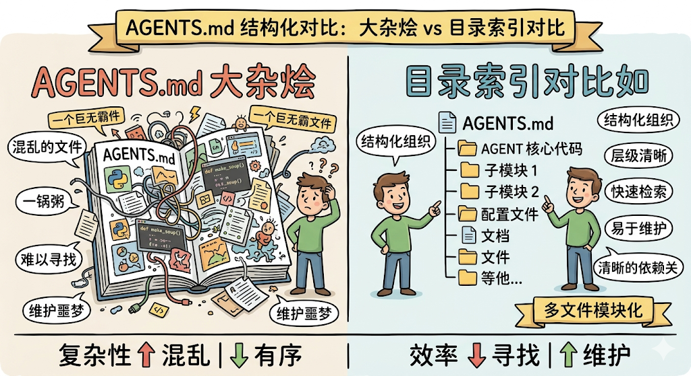
img
结果呢？Agent 更糊涂了。
为啥？因为上下文窗口是稀缺资源。这个文件被当作系统提示词每次都注入进去，当它变得越来越长的时候，模型的注意力被严重稀释。它看到的东西太多，反而抓不住当前任务真正需要的那部分。
这其实就是我们前面讲过的「上下文腐化」在规则文件这个场景的具体表现。
公开案例中的改法是把 AGENTS.md 从一本“百科全书”改成一个“目录页”：
- 主文件保留短小的核心索引。某个公开案例给出了约 100 行的示例，但这不是黄金线；应按 token 预算、规则密度、检索效果和回归测试调整。主文件可以告诉 Agent「你想看什么，去哪儿看」
- 详细的内容拆到具体的子文档里：架构文档一份、设计原则一份、产品规格一份、执行计划一份、质量评分一份，每份都有清晰的主题
- Agent 平时只看目录，只有真的需要某一部分的时候，才钻进对应的子文档
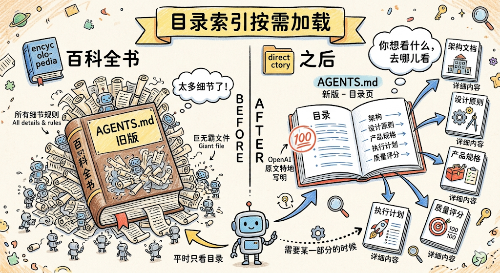
img
这套做法与前面讲的渐进式披露（Progressive Disclosure）相近。
我特别喜欢这个思路，因为它和我们做软件设计里的「按需加载」「懒加载」一脉相承：上下文优化的本质，不是「给得越多越好」，而是「该给的时候给，不该给的时候藏起来」。
这一点和 Agent Skills 的按需加载思想相近。如果你现在在写 CLAUDE.md 或 Cursor Rules，可以检查它是否已经“百科全书化”，并用任务相关性和评测决定是否拆分。
原则四：规则文件宁缺毋滥，给模型看的东西少即是多。
难题五，Agent 写的代码越堆越烂，技术债怎么还？
前面四个难题都还算比较抽象，这一个特别具体、特别接地气，是 OpenAI 团队在《Harness engineering》博客里亲口承认的一个「我们一开始做错了」的故事。
先说现象。当 Agent 负责写绝大多数代码之后，会发生一件很自然但也很糟糕的事：Agent 会疯狂模仿仓库里已有的代码模式。
好的模式会被复制，坏的模式也会被复制。一旦早期某段代码写歪了，Agent 会把那个歪的写法当成「惯例」，越堆越多，越堆越歪，最后整个代码库开始「腐烂」。这个现象 OpenAI 团队给它起了一个很扎心的名字，叫 AI slop，AI 代码泔水。
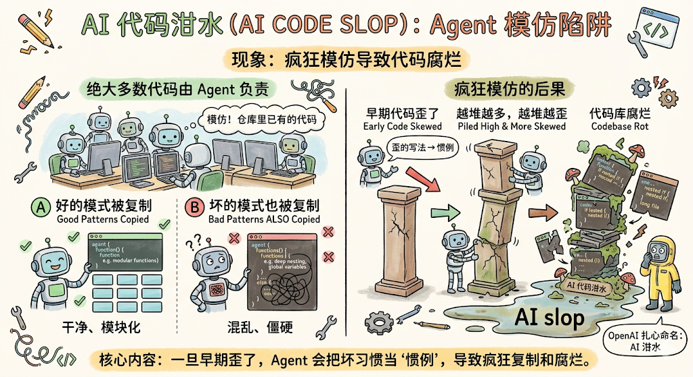
img
OpenAI 团队一开始是怎么解决这个问题的？用最朴素的办法：靠人工清理。
公开案例把“定期人工清理 AI slop”描述为一种低效做法；不要把文中的具体工作日比例外推成通用流程。
问题在于人工清理可能赶不上产出，也可能缺少一致的验收标准；更稳妥的做法是把可机器检查的规则前移，同时保留人工审查高风险变更。
那 OpenAI 最后是怎么改的？他们用一个非常 Harness 的思路解决了这个问题。做法分两步：
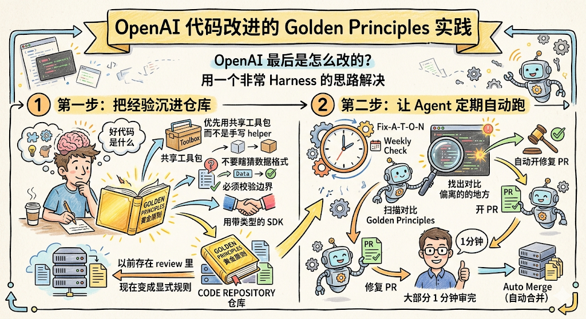
img
- 第一步，把人类工程师关于"什么是好代码"的经验，写成一套「Golden Principles」（黄金原则）沉进仓库。比如「优先用共享工具包而不是手写 helper」「不要瞎猜数据格式，必须校验边界或用带类型的 SDK」，这些都是有经验的工程师脑子里的隐性知识，以前只存在 code review 的讨论里，现在被显式地写成了规则。
- 第二步，让受限的后台检查按固定节奏运行。它们可以扫描仓库、对比原则并提出修复 PR；自动合并前仍要经过权限、测试、diff 大小和风险门槛，审查耗时取决于变更，不能承诺固定分钟数。
你品品这个做法。它其实把「还技术债」这件事从一周一次的人工集中清扫，变成了每天持续进行的自动偿还。OpenAI 原文里有一句话我特别喜欢：
技术债就像一笔高利息贷款，几乎永远应该每天小额还一点点，而不是攒着等某一天集中还。
这太准确了。你想想我们平时写代码是不是也这样？谁都知道技术债要清，但总是说「等这个季度忙完了统一重构」，结果永远也没有「不忙的季度」，技术债越滚越大。Agent 帮人类解决这个老毛病的办法，居然是把经验固化成规则，然后用 Agent 自己去对付 Agent。
原则五：技术债不是攒一堆集中还，而是每天让后台 Agent 自动偿还一点。
顺便提一个反直觉的发现：Agent 用「老技术」反而更稳
讲完五个难题，我想再顺手补一个 OpenAI 博客里特别反直觉的小观察，虽然它不算难题，但值得你记住。
很多人做 AI 编程的时候有一个想当然的认知：AI 是最前沿的东西，那当然应该配上最前沿的技术栈，什么新框架都给 Agent 上一套。但 OpenAI 在实践中发现，事情正好反过来：
Agent 对那些被人类称为「boring」的老技术反而掌握得最好。
为啥？OpenAI 原文给了三个原因：组合性好、API 稳定、训练数据里出现得多。
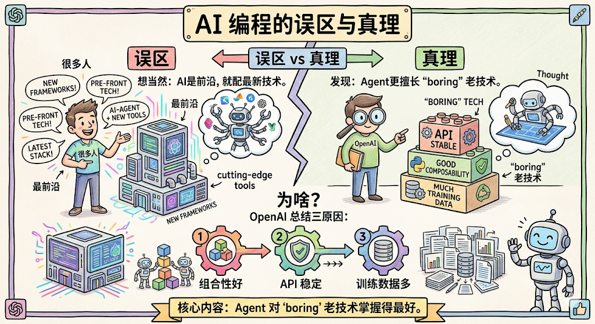
img
你想想这个逻辑就通了：AI 训练数据里，一个出现了十几二十年的老库，相关的代码示例、StackOverflow 问答、博客文章多如牛毛，AI 对它的各种用法了如指掌。而一个昨天才出的新框架，AI 只看过零星几篇文档，很容易张冠李戴。
所以 OpenAI 在 Codex 项目里，甚至会主动选择那些看起来很土的、甚至业界已经有点嫌弃的技术栈，就因为 Agent 能把它们用得更稳。
有些场景会偏好依赖稳定、文档完整、接口清晰的组件；是否自己实现小工具要综合安全审计、维护成本、许可证和测试，不能假设 Agent 能 100% 理解任何自写代码。
这个发现给你的实际启发是：如果你要做一个让 Agent 跑得稳的项目，在选技术栈的时候，不要一味追新。越老、文档越齐全、在开源社区里沉淀了越久的技术，Agent 反而越容易帮你做对。
好，五个难题 + 一个反直觉发现，这一章就讲完了。
你可能已经感觉到一件事：这些难题的解法全都有一个共同点，它们都不是在调模型，而是在设计模型外面的那一整套环境。这就是 Harness Engineering 的灵魂所在。
我也帮你把这五条原则打包成一个小口诀，带着它进入下一章：
重启胜过修补，生产验收分家，与其催模型不如改环境，规则宁缺毋滥，技术债天天还。
这五条原则是从本文案例抽出的工程启发，不代表所有大厂或所有项目都采用同一套流程。
写在最后
写到这儿，我想给你把整篇文章的思路再梳理一遍。
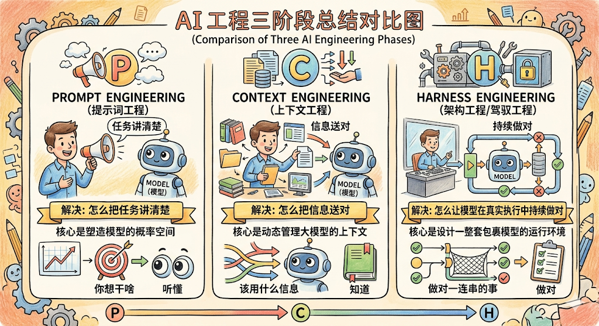
img
AI 工程的重心，过去两年换过三次：
- Prompt Engineering 解决的是「怎么把任务讲清楚」。它的核心是塑造模型的概率空间，让模型「听懂」你想干啥。
- Context Engineering 解决的是「怎么把信息送对」。它的核心是动态管理大模型的上下文，让模型「知道」该用什么信息。
- Harness Engineering 解决的是「怎么让模型在真实执行中持续做对」。它的核心是设计一整套包裹模型的运行环境，让模型「做对」一连串的事。
这三个东西不是替代关系，而是层层包含的关系。
Prompt 是 Context 的一部分，Context 是 Harness 的一部分。
当任务还是简单的单轮对话的时候，Prompt 就够用；当任务开始需要外部知识的时候，Context 就关键了；但当模型真正进入「长链路、可执行、低容错」的真实场景，Harness 几乎是不可避免的。
到了今天这个阶段，整个 AI 圈也越来越清楚一件事：
AI 落地的核心挑战，正在从「让模型看起来更聪明」，转向「让模型在真实世界里稳定地工作」。
模型决定了一个 Agent 的天花板，但 Harness 决定了它能不能落地、能不能稳定交付、能不能真正跑在生产环境里。这就是为啥同样的模型，在不同的产品里效果差距会这么大。
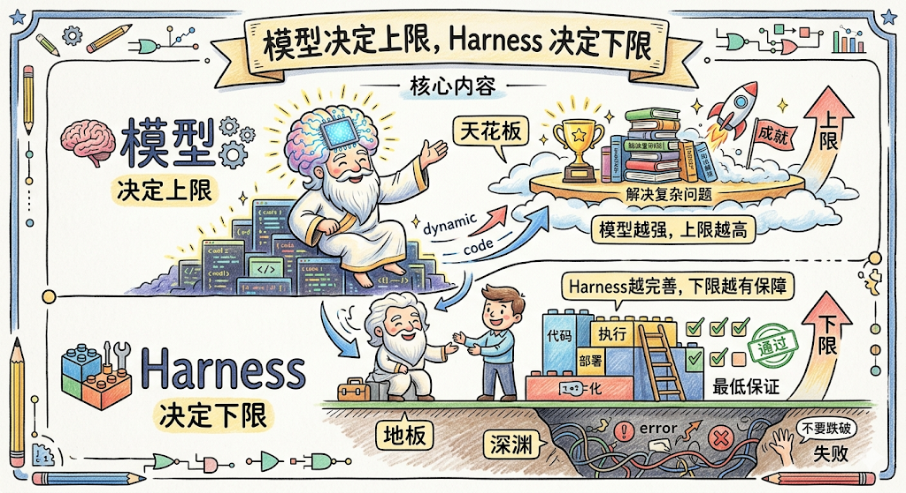
img
如果你最近也在做 Agent 相关的事情，我特别建议你：别再把所有精力都花在调模型、调提示词上了。
回过头来看看你的 Harness 长啥样，看看你有没有规则文件、有没有校验闭环、有没有任务编排、有没有评估机制、有没有失败恢复。这些东西，每一项都能让你的 Agent 上一个台阶。
顺便说一个值得你深思的趋势。如果你真的把 Harness 这件事认真做几个月，你会发现一个很微妙的变化：你花在「亲手写代码」上的时间越来越少，花在「写规则、写流程、设计环境」上的时间越来越多。
OpenAI Codex 团队那几个工程师能撬动百万行代码，靠的就不是键盘敲得快，而是把 Agent 的运行环境设计到位。
写代码这件事本身会越来越多地交给 Agent，但设计一个能让 Agent 高质量产出的环境，这件事在很长一段时间里都得是人来做。这可能就是未来程序员真正的主战场。
最后，再用一个便于沟通但不是恒等式的表达收个尾：
Agent = Model + Harness
Agent 的效果取决于模型、Harness、业务代码、数据和外部系统的共同作用；优化路径可能是换模型，也可能是改上下文、工具、评估、权限或恢复机制。
这就是今天想跟你分享的全部内容。
我们下篇文章见。
参考资料
- Mitchell Hashimoto，《My AI Adoption Journey》, https://mitchellh.com/writing/my-ai-adoption-journey
- OpenAI，《Harness engineering: leveraging Codex in an agent-first world, https://openai.com/index/harness-engineering/
- Anthropic，《Effective harnesses for long-running agents》, https://www.anthropic.com/engineering/effective-harnesses-for-long-running-agents
- Anthropic，《Harness design for long-running application development》, https://www.anthropic.com/engineering/harness-design-long-running-apps
- Anthropic，《Effective context engineering for AI agents》, https://www.anthropic.com/engineering/effective-context-engineering-for-ai-agents
- LangChain，《Improving Deep Agents with harness engineering》, https://blog.langchain.com/improving-deep-agents-with-harness-engineering/
- Cognition，《Rebuilding Devin for Claude Sonnet 4.5: Lessons and Challenges》, https://cognition.ai/blog/devin-sonnet-4-5-lessons-and-challenges